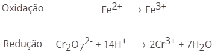

Química Analitica
Acerto de equações químicas
O acerto de equações químicas baseia-se na lei de Lavoisier, que, no contexto das reações, diz que as massas dos reagentes é igual à massa dos produtos, e por isso o nº de átomos de um dado elemento é igual ao nº de átomos desse mesmo elemento nos produtos.
Tomando como por exemplo a seguinte reação (não acertada):

1. Acertamos os carbonos e os hidrogenios nos produtos já que nos reagentes só há uma molécula que possui estes elementos:

2. Depois acertamos os oxigénios:

No entanto existem também outras reações mais dificeis de acertar, em particular de oxidação-redução. Nestes casos, é necessário separar a equação nas semireações de oxidação e de redução, e ainda considerar o tipo de meio (ácido ou básico).
Em meio ácido, vamos considerar a equação (não acertada) da reação de oxidação-redução do ferro(II) e do ião dicromato:
1. Identificamos as semireações de oxidação e redução (sem acerto):
~

2. Acertamos os elementos que não sejam oxigénios ou hidrogénios:
3. Acertamos os oxigénios por adição de água:

4. Acertamos os hidrogénios por adição de protões H+:
5. Acertamos as cargas elétricas por adição de eletrões:

6. Multiplicar cada semi-equação de modo a obter um número de eletrões cedidos na oxidação igual ao número de eletrões captados pela redução:

7. Somar as duas equações e simplificar:
8. Escrever a equação da reação final e verificar se está tudo correto: